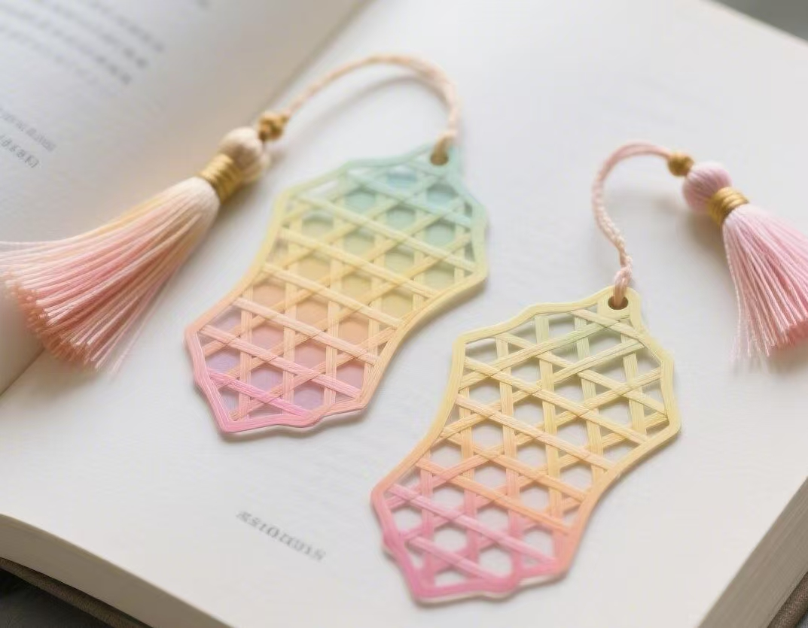

竹书签
竹书签的历史与中国悠久的竹文化和书籍文化密切相关，大致经历了以下几个发展阶段：
早期雏形：书签的起源可以追溯到春秋战国时期，当时的人们为了在阅读简牍书籍时便于标记，会使用一些小竹片夹在简牍之间，这可以看作是竹书签的早期雏形。不过，那时的竹片主要是起到简单的标识作用，尚未有过多的装饰和工艺。
发展与演变：随着造纸术的发明和书籍的逐渐普及，到了唐代，书签的使用更为普遍。虽然纸质书签开始出现，但竹书签依然因其坚固耐用和取材方便而受到人们的喜爱。这一时期，竹书签的制作工艺有所发展，有的会在竹片上题写书名或贴上写有书名的纸条，还有的会对竹片进行简单的雕刻装饰。
明清时期是竹编工艺的繁荣阶段，竹书签也得到了进一步发展。此时的竹书签制作更加精细，工艺更为复杂，常常运用到各种雕刻技法，如浮雕、透雕等，在竹片上雕刻出精美的图案和文字，使其不仅具有实用功能，还成为了具有艺术价值的工艺品。
进入现代社会，竹书签在继承传统工艺的基础上不断创新。一方面，传统的手工竹书签制作工艺得到了很好的传承，一些民间艺人依然坚持用传统技法制作精美的竹书签；另一方面，随着现代技术的发展，机器加工也被应用到竹书签的制作中，提高了生产效率，使得竹书签能够更广泛地进入人们的生活。同时，设计师们将现代设计理念与传统竹文化相结合，开发出各种新颖的竹书签款式，使其更符合现代人的审美和使用需求。